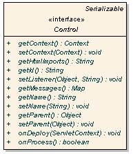
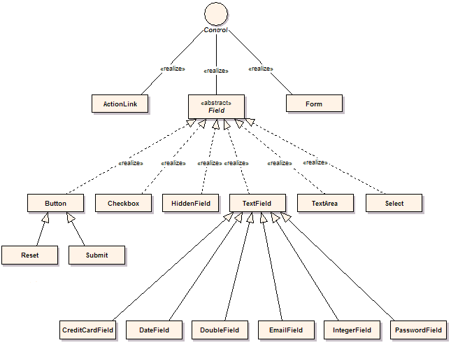

Controls
Click provides a rich set of Controls which support client side rendering and
server side processing. This section covers the following topics:
While this section provides an overview how Controls work please see the
Javadoc.
which provides extensive information and examples.
Javadoc
Control Interface
In Click Controls provide the server side components that process user input, and render their
display to the user. Controls are equivalent to Visual Basic Controls or Delphi Components.
Controls handle the processing of user input with the
onProcess
method and rendering their HTML display using the toString() method. The execution
sequence for Control being processed and rendered is illustrated below in Figure 1.

Figure 1. Post Sequence Diagram
- created with Enterprise Architect courtesy Sparx Systems
In Click all control classes must implement the
Control interface.
The Control interface is depicted below in Figure 2.

Figure 2. Control Interface Diagram
- created with Enterprise Architect courtesy Sparx Systems
Methods on the Control interface include:
Control Callback
Click Controls provide an event callback mechanism similar the java.awt.ActionListener callback.
To define a control listener, simply set the listener object instance and the name of the
listener method to be invoked. For example:
public class SimpleCallback extends Page {
public SimpleCallback() {
ActionLink clickLink = new ActionLink("clickLink");
clickLink.setListener(this, "onClick");
addControl(clickLink);
}
public boolean onClick() {
System.out.println("onClick invoked");
return true;
}
}
The listener method can have any name but it must have take no parameters and must return a boolean or
java.lang.Boolean value.
When a callback method returns true the processing of other Controls will continue and the Pages onGet()
or onPost() event handler will be called. If a controls returns false not further Control processing
will be performed and neither of the Page onGet() or onPost() methods will be invoked. This execution
logic is illustrated in the Page Execution Activity Diagram.
Being able to stop further processing and do something else can be very handy. For example your
Pages onGet() or onPost() method may perform an expensive database operation. By using
returning false in a event handler you can skip this step and forward to the next page.
Control Classes
Core control classes are defined in the package
net.sf.click.control.
This package includes controls for the essential HTML elements.
Extended control classes are provided in the Click Extras package
net.sf.click.extras.control.
Click Extras classes can contain dependencies to 3rd party frameworks.
A subset of these control classes are depicted below in Figure 3.

Figure 3. Package Class Diagram
- created with Enterprise Architect courtesy Sparx Systems
The key control classes include:
- ActionLink
- provides a anchor link which can invoke callback listeners.
- Field
- provides the abstract form field control.
- Form
- provides a form control for processing, validation and rendering.
- Submit
- provides a input type submit control which can invoke callback listeners.
- TextField
- provides a input type text control which can invoke callback listeners.
The control classes are designed to support subclassing for customized
behaviour. All control fields have protected visibility and have public
accessor methods.
You can also aggregate controls to build more complex controls. For example the
CreditCardField
uses a Select
control to render the different credit card types.
Message Properties
Control strings for field validation messages and HTML formatting strings are
externalized in the properties file. By using these properties files you can
localize a Click application for your particular language and dialect.
Message Resolution
Messages are looked up in a particular order enabling taylor specific messages,
for your controls, individual pages or across your entire application.
The order in which localized messages are resolve is:
- Page scope messages
- Message lookups are first resolved to the Page classes message bundle if it
exists. For example a Login page may define the message properties:
/com/mycorp/page/Login.properties
If you want to tailor messages for a particular page this is where to place
them.
- Global page scope messages
- Next message lookups are resolved to the global pages message bundle if it
exists.
/click-page.properties
If you want messages to be used across your entire application this is where
to place them.
- Control scope messages
- Next message lookups are resolved to the Control classes message bundle if
it exists. For example a CustomTextField control may define the
message properties:
/com/mycorp/control/CustomTextField.properties
- Global control scope messages
- Finally message lookups are resolved to the global application control
message bundle if the message has not already found. The global control
properties file is:
/click-control.properties
Control Properties
To customize the click-control.properties simply add this file to your
classpath and tailor the specific values.
Note when customizing the message properties you must include all the properties,
not just the ones you want to override.
# Click Control messages
field-maxlength-error={0} must be no longer than {1} characers
field-minlength-error={0} must be at least {1} characters
field-required-error=You must enter a value for {0}
file-required-error=You must enter a filename for {0}
label-required-prefix=
label-required-suffix=<span class="required">*</span>
label-not-required-prefix=
label-not-required-suffix=
not-checked-error=You must select {0}
number-maxvalue-error={0} must not be larger than {1}
number-minvalue-error={0} must not be smaller than {1}
select-error=You must select a value for {0}
table-first-label=First
table-first-title=Go to first page
table-previous-label=Prev
table-previous-title=Go to previous page
table-next-label=Next
table-next-title=Go to next page
table-last-label=Last
table-last-title=Go to last page
table-goto-title=Go to page
table-page-banner=<span class="pagebanner">{0} items found, displaying {1} to {2}.</span>
table-page-banner-nolinks=
<span class="pagebanner-nolinks">{0} items found, displaying {1} to {2}.</span>
table-page-links=<span class="pagelinks">[{0}/{1}] {2} [{3}/{4}]</span>
table-page-links-nobanner=<span class="pagelinks-nobanner">[{0}/{1}] {2} [{3}/{4}]</span>
# Message displayed when a error occurs when the application is in "production" mode
production-error-message=
<div id='errorReport' class='errorReport'>The application encountered an unexpected error.
</div>
Accessing Messages
Field classes support a hierarchy of resource bundles for displaying
validation error messages and display messages. These localized messages can be
accessed through the Field methods:
These methods use the Locale of the request to lookup the string resource
bundle, and use MessageFormat for any string formatting.